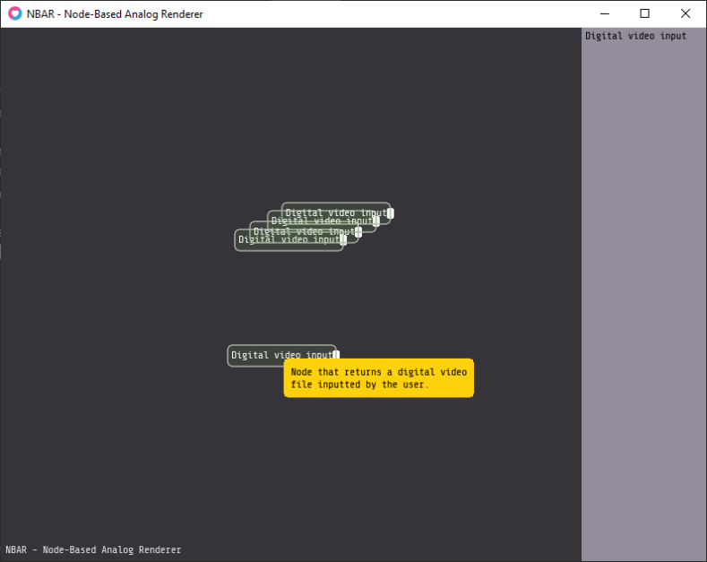

BLOGS
2024/12/20
Here's a sneak peek of our new project - NBAR! The Node-Based Analog Renderer.
It's a program written in Lua with Love2D that converts digital video to analog, applies effects, and converts it back to digital.
This should mean more realistic effects on the video like noise, but also some other interesting stuff done with audio would be possible here.
